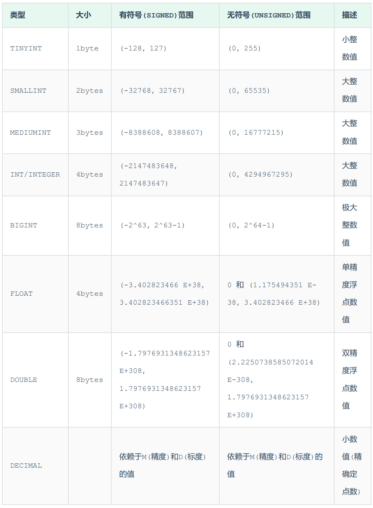
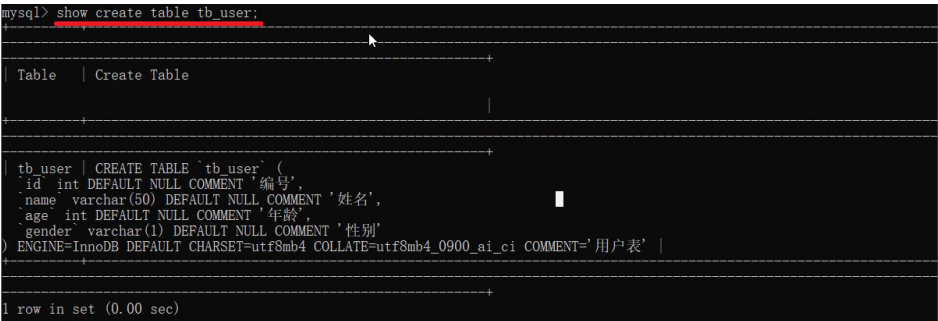

一、SQL
SQL 是操作关系型数据库的编程语言，定义了 一套操作关系型数据库统一标准 。
SQL通用语法：
- SQL语句可以单行或多行书写，以分号结尾。
- SQL语句可以使用空格/缩进来增强语句的可读性。
- MySQL数据库的SQL语句不区分大小写，关键字建议使用大写。
- 注释：
- 单行注释：– 注释内容 或 # 注释内容
- 多行注释：/* 注释内容 */
SQL分类：
| 分 类 | 全 称 | 说 明 |
|---|---|---|
| DDL | Data Definition Languag | 数据定义语言，用来定义数据库对象(数据库，表， 字段) |
| DML | Data Manipulation Language | 数据操作语言，用来对数据库表中的数据进行增删改 |
| DQL | Data Query Language | 数据查询语言，用来查询数据库中表的记录 |
| DCL | Data Control Language | 数据控制语言，用来创建数据库用户、控制数据库的访问权限 |
1. DDL(数据定义语言)
用来定义数据库对象（数据库，表，字段）。
1.1 数据库操作
1）查询所有数据库
show databases;2）查询当前数据库
select database() ;3）创建数据库
create database [ if not exists ] 数据库名 [ default charset 字符集 ] [ collate 排序规则 ] ;- 在同一个数据库服务器中，不能创建两个名称相同的数据库，否则将会报错。
- 可以通过if not exists 参数来解决这个问题，数据库不存在，则创建该数据库；如果存在，则不创建（不报错）。
4）删除数据库
drop database [ if exists ] 数据库名 ;- 如果删除一个不存在的数据库，将会报错。
- 可以加上参数 if exists ，如果数据库存在，再 执行删除，否则不执行删除（不报错）。
5）切换数据库
use 数据库名 ;1.2 表操作
1.2.1 数据类型
MySQL中的数据类型有很多，主要分为三类：数值类型、字符串类型、日期时间类型。
1）数值类型

分数 – 总分100分, 最多出现一位小数
score double(4,1) // 共4位，1位小数
2）字符串类型
- char是定长字符串，指定长度多长，就占用多少个字符，和字段值的长度无关 。
- 而varchar是变长字符串，指定的长度为最大占用长度 。相对来说，char的性能会更高些。
1). 用户名 username ——> 长度不定, 最长不会超过50
username varchar(50)
2). 性别 gender ———> 存储值, 不是男,就是女
gender char(1)
3). 手机号 phone ——–> 固定长度为11
phone char(11)
3）日期时间类型
1.2.2 查询&创建表
1）查询当前数据库所有表
show tables;2）查看指定表结构
desc 表名 ;
3）查询指定表的建表语句
show create table 表名 ;
4）创建表结构
CREATE TABLE 表名(
字段1 字段1类型 [ COMMENT 字段1注释 ],
字段2 字段2类型 [COMMENT 字段2注释 ],
字段3 字段3类型 [COMMENT 字段3注释 ],
......
字段n 字段n类型 [COMMENT 字段n注释 ]
) [ COMMENT 表注释 ] ;1.2.3 修改表
1）添加字段
ALTER TABLE 表名 ADD 字段名 类型 (长度) [ COMMENT 注释 ] [ 约束 ];2）修改数据类型
ALTER TABLE 表名 MODIFY 字段名 新数据类型 (长度);3）修改字段名和字段类型
ALTER TABLE 表名 CHANGE 旧字段名 新字段名 类型 (长度) [ COMMENT 注释 ] [ 约束 ];4）删除字段
ALTER TABLE 表名 DROP 字段名;5）修改表名
ALTER TABLE 表名 RENAME TO 新表名;1.2.4 删除表
1）删除表
DROP TABLE [ IF EXISTS ] 表名;2）删除指定表, 并重新创建表
TRUNCATE TABLE 表名;总结
2. DML(数据操作语言)
用来对数据库中表的数据记录进行增、删、改操作。
2.1 添加数据
1）给指定字段添加数据
INSERT INTO 表名 (字段名1, 字段名2, ...) VALUES (值1, 值2, ...);2）给全部字段添加数据
INSERT INTO 表名 VALUES (值1, 值2, ...);3）批量添加数据
INSERT INTO 表名 (字段名1, 字段名2, ...) VALUES (值1, 值2, ...), (值1, 值2, ...), (值
1, 值2, ...) ;
INSERT INTO 表名 VALUES (值1, 值2, ...), (值1, 值2, ...), (值1, 值2, ...) ;字符串和日期型数据应该包含在引号中。
2.2 修改&删除数据
修改
UPDATE 表名 SET 字段名1 = 值1 , 字段名2 = 值2 , .... [ WHERE 条件 ];删除
DELETE FROM 表名 [ WHERE 条件 ] ;
- DELETE 语句的条件可以有，也可以没有，如果没有条件，则会删除整张表的所有数据。
- DELETE 语句不能删除某一个字段的值(可以使用UPDATE，将该字段值置为NULL即可)。
总结
3. DQL(数据查询语言)
用来查询数据库中表的记录。
语法结构
SELECT
字段列表
FROM
表名列表
WHERE
条件列表
GROUP BY
分组字段列表
HAVING
分组后条件列表
ORDER BY
排序字段列表
LIMIT
分页参数3.1 基础查询
1）查询多个字段
SELECT 字段1, 字段2, 字段3 ... FROM 表名 ;
SELECT * FROM 表名 ;2）字段设置别名
SELECT 字段1 [ AS 别名1 ] , 字段2 [ AS 别名2 ] ... FROM 表名;
SELECT 字段1 [ 别名1 ] , 字段2 [ 别名2 ] ... FROM 表名;3）去除重复记录
SELECT DISTINCT 字段列表 FROM 表名;3.2 条件查询
SELECT 字段列表 FROM 表名 WHERE 条件列表 ;比较运算符：
逻辑运算符：
查询年龄等于18 或 20 或 40 的员工信息
select * from emp where age = 18 or age = 20 or age =40; select * from emp where age in(18,20,40);查询姓名为两个字的员工信息
select * from emp where name like '__';查询身份证号最后一位是X的员工信息
select * from emp where idcard like '%X';
3.3 聚合函数
将一列数据作为一个整体，进行纵向计算 。
SELECT 聚合函数(字段列表) FROM 表名 ;3.4 分组查询
SELECT 字段列表 FROM 表名 [ WHERE 条件 ] GROUP BY 分组字段名 [ HAVING 分组后过滤条件 ];where与having区别：
- 执行时机不同：where是分组之前进行过滤，不满足where条件，不参与分组；而having是分组之后对结果进行过滤。
- 判断条件不同：where不能对聚合函数进行判断，而having可以。
注意事项:
- 分组之后，查询的字段一般为聚合函数和分组字段，查询其他字段无任何意义。
- 执行顺序: where > 聚合函数 > having 。
- 支持多字段分组, 具体语法为 : group by columnA,columnB
A. 根据性别分组 , 统计男性员工 和 女性员工的数量
select gender, count(*) from emp group by gender ;B. 查询年龄小于45的员工 , 并根据工作地址分组 , 获取员工数量大于等于3的工作地址
select workaddress, count(*) address_count from emp where age < 45 group by workaddress having address_count >= 3;C. 统计各个工作地址上班的男性及女性员工的数量
select workaddress, gender, count(*) '数量' from emp group by gender , workaddress;3.5 排序查询
SELECT 字段列表 FROM 表名 ORDER BY 字段1 排序方式1 , 字段2 排序方式2 ;排序方式：
- ASC : 升序(默认值)
- DESC: 降序
注意事项：
- 如果是升序, 可以不指定排序方式ASC ;
- 如果是多字段排序，当第一个字段值相同时，才会根据第二个字段进行排序 ;
3.6 分页查询
SELECT 字段列表 FROM 表名 LIMIT 起始索引, 查询记录数 ;注意事项:
- 起始索引从0开始，
起始索引 = （查询页码 - 1）* 每页显示记录数。- 分页查询是数据库的方言，不同的数据库有不同的实现，MySQL中是LIMIT。
- 如果查询的是第一页数据，起始索引可以省略，直接简写为 limit 10。
3.7 执行顺序
4. DCL(数据控制语言)
用来管理数据库用户、控制数据库的访问权限。
4.1 管理用户
1）查询用户
select * from mysql.user;2）创建用户
CREATE USER '用户名'@'主机名' IDENTIFIED BY '密码';3）修改用户密码
ALTER USER '用户名'@'主机名' IDENTIFIED WITH mysql_native_password BY '新密码' ;4）删除用户
DROP USER '用户名'@'主机名' ;- 主机名可以使用 % 通配，表示可以在任意主机访问该数据库。
4.2 权限控制
1）查询权限
SHOW GRANTS FOR '用户名'@'主机名' ;2）授予权限
GRANT 权限列表 ON 数据库名.表名 TO '用户名'@'主机名';3）撤销权限
REVOKE 权限列表 ON 数据库名.表名 FROM '用户名'@'主机名';A. 授予 ‘heima‘@’%’ 用户itcast数据库所有表的插入、修改操作权限
grant insert,update on itcast.* to 'heima'@'%';二、函数
MySQL中的函数主要分为以下四类： 字符串函数、数值函数、日期函数、流程函数。
1. 字符串函数
- SUBSTRING(str,start,len)，start从1开始
2. 数值函数
案例：通过数据库的函数，生成一个六位数的随机验证码。
思路： 获取随机数可以通过rand()函数，但是获取出来的随机数是在0-1之间的，所以可以在其基础 上乘以1000000，然后舍弃小数部分，如果长度不足6位，补0
select lpad(round(rand()*1000000 , 0), 6, '0');3. 日期函数

4. 流程函数
A. ifnull
select ifnull('','Default');// ''
select ifnull(null,'Default');// DefaultB. case when then else end
需求: 查询emp表的员工姓名和工作地址 (北京/上海 —-> 一线城市 , 其他 —-> 二线城市)
select
name,
( case workaddress when '北京' then '一线城市' when '上海' then '一线城市' else '二线城市' end ) as '工作地址'
from emp;三、约束
约束是作用于表中字段上的规则，用于限制存储在表中的数据。
可以在创建表/修改表的时候添加约束。
1. 表内约束
建表语句示例：
CREATE TABLE tb_user(
id int AUTO_INCREMENT PRIMARY KEY COMMENT 'ID唯一标识',
name varchar(10) NOT NULL UNIQUE COMMENT '姓名' ,
age int check (age > 0 && age <= 120) COMMENT '年龄' ,
status char(1) default '1' COMMENT '状态',
gender char(1) COMMENT '性别'
);2. 外键约束
2.1 介绍
外键：用来让两张表的数据之间建立连接，从而保证数据的一致性和完整性。
删除id为1的部门信息。若无外键约束，则删除成功。部门表不存在id为1的部门，而在emp表中还有很多的员 工，关联的为id为1的部门，此时就出现了数据的不完整性。
2.2 语法
1）添加外键
CREATE TABLE 表名(
字段名 数据类型,
...
[CONSTRAINT] [外键名称] FOREIGN KEY (外键字段名) REFERENCES 主表 (主表列名)
);
ALTER TABLE 表名 ADD CONSTRAINT 外键名称 FOREIGN KEY (外键字段名) REFERENCES 主表 (主表列名) ;案例：
为emp表的dept_id字段添加外键约束,关联dept表的主键id。
alter table emp add constraint fk_emp_dept_id foreign key (dept_id) references dept(id);
-- 此时不能删除或更新父表(dept表)记录2）删除外键
ALTER TABLE 表名 DROP FOREIGN KEY 外键名称;2.3 删除/更新行为
添加了外键之后，再删除父表数据时产生的约束行为，我们就称为删除/更新行为。
ALTER TABLE 表名 ADD CONSTRAINT 外键名称 FOREIGN KEY (外键字段) REFERENCES 主表名 (主表字段名) ON UPDATE 行为 ON DELETE 行为;四、多表查询
1. 多表关系
由于业务之间相互关联，各个表结构之间也存在着各种联系，基本上分为三种：
- 一对多(多对一)
- 多对多
- 一对一
1.1 一对多
案例: 部门与员工的关系
关系: 一个部门对应多个员工，一个员工对应一个部门
实现: 在多的一方建立外键，指向一的一方的主键

1.2 多对多
案例: 学生与课程的关系
关系: 一个学生可以选修多门课程，一门课程也可以供多个学生选择
实现: 建立第三张中间表，中间表至少包含两个外键，分别关联两方主键
1.3 一对一
案例: 用户 与 用户详情的关系
关系: 一对一关系，多用于单表拆分，将一张表的基础字段放在一张表中，其他详情字段放在另 一张表中，以提升操作效率
实现: 在任意一方加入外键，关联另外一方的主键，并且设置外键为唯一的(UNIQUE)
2. 概述
多表查询会导致笛卡尔积，即两个集合A集合 和 B集合的所有组合情况。
此时需要加上连接查询的条件：
select * from emp , dept where emp.dept_id = dept.id;分类：
- 连接查询
- 内连接：相当于查询A、B交集部分数据
- 外连接：
- 左外连接：查询左表所有数据，以及两张表交集部分数据
- 右外连接：查询右表所有数据，以及两张表交集部分数据
- 自连接：当前表与自身的连接查询，自连接必须使用表别名
- 子查询
3. 连接查询
3.1 内连接
内连接查询的是两张表交集部分的数据。(也就是绿色部分的数据)
1）隐式内连接
SELECT 字段列表 FROM 表1 , 表2 WHERE 条件 ... ;2）显式内连接
SELECT 字段列表 FROM 表1 [ INNER ] JOIN 表2 ON 连接条件 ... ;3.2 外连接
外连接分为两种，分别是：左外连接 和 右外连接。具体的语法结构为：
1）左外连接
SELECT 字段列表 FROM 表1 LEFT [ OUTER ] JOIN 表2 ON 条件 ... ;左外连接相当于查询表A(左表)的所有数据，当然也包含表A和表B交集部分的数据。
2）右外连接
SELECT 字段列表 FROM 表1 RIGHT [ OUTER ] JOIN 表2 ON 条件 ... ;右外连接相当于查询表B(右表)的所有数据，当然也包含表A和表B交集部分的数据。
3.3 自连接
3.3.1 自连接查询
自连接查询，顾名思义，就是自己连接自己，也就是把一张表连接查询多次。
可以是内连接查询，也可以是外连接查询。
SELECT 字段列表 FROM 表A 别名A JOIN 表A 别名B ON 条件 ... ;案例：
A. 查询所有员工 emp 及其领导的名字 emp , 如果员工没有领导, 也需要查询出来
表结构: emp a , emp b
select a.name '员工', b.name '领导' from emp a left join emp b on a.managerid = b.id;注意事项:
在自连接查询中，必须要为表起别名，要不然我们不清楚所指定的条件、返回的字段，到底 是哪一张表的字段。
3.3.2 联合查询
对于union查询，就是把多次查询的结果合并起来，形成一个新的查询结果集。
SELECT 字段列表 FROM 表A ...
UNION [ ALL ]
SELECT 字段列表 FROM 表B ....;- 对于联合查询的多张表的列数必须保持一致，字段类型也需要保持一致。
- union all 会将全部的数据直接合并在一起，union 会对合并之后的数据去重。
案例:
A. 将薪资低于 5000 的员工 , 和 年龄大于 50 岁的员工全部查询出来.
当前对于这个需求，我们可以直接使用多条件查询，使用逻辑运算符 or 连接即可。 那这里呢，我们 也可以通过union/union all来联合查询
select * from emp where salary < 5000
union
select * from emp where age > 50;4. 子查询
SQL语句中嵌套SELECT语句，称为嵌套查询，又称子查询。
SELECT * FROM t1 WHERE column1 = ( SELECT column1 FROM t2 );子查询外部的语句可以是INSERT / UPDATE / DELETE / SELECT 的任何一个。
根据子查询结果不同，分为：
- 标量子查询（子查询结果为单个值）
- 列子查询(子查询结果为一列)
- 行子查询(子查询结果为一行)
- 表子查询(子查询结果为多行多列)
4.1 标量子查询
子查询返回的结果是单个值（数字、字符串、日期等），最简单的形式。
常用的操作符：= <> > >= < <=
A. 查询 “销售部” 的所有员工信息
select * from emp where dept_id = (select id from dept where name = '销售部');4.2 列子查询
子查询返回的结果是一列（可以是多行）。
常用的操作符：IN 、NOT IN 、 ANY 、SOME 、 ALL
案例：
A. 查询比研发部其中任意一人工资高的员工信息
select * from emp where salary > any ( select salary from emp where dept_id = (select id from dept where name = '研发部') );4.3 行子查询
子查询返回的结果是一行（可以是多列）。
常用的操作符：= 、<> 、IN 、NOT IN
案例:
A. 查询与 “张无忌” 的薪资及直属领导相同的员工信息
select * from emp where (salary,managerid) = (select salary, managerid from emp where name = '张无忌');4.4 表子查询
子查询返回的结果是多行多列，这种子查询称为表子查询。
常用的操作符：IN
案例：
A. 查询与 “鹿杖客” , “宋远桥” 的职位和薪资相同的员工信息
select * from emp where (job,salary) in ( select job, salary from emp where name = '鹿杖客' or name = '宋远桥' );B. 查询入职日期是 “2006-01-01” 之后的员工信息 , 及其部门信息
select e.*, d.* from (select * from emp where entrydate > '2006-01-01') e left join dept d on e.dept_id = d.id ;五、事务
事务 是一组操作的集合，它是一个不可分割的工作单位，事务会把所有的操作作为一个整体一起向系统提交或撤销操作请求，即这些操作要么同时成功，要么同时失败。
注意： 默认MySQL的事务是自动提交的，也就是说，当执行完一条DML语句时，MySQL会立即隐式的提交事务。
1. 事务操作
1.1 方式一
1）查看/设置事务提交方式
SELECT @@autocommit ;
SET @@autocommit = 0 ;2）提交事务
COMMIT;3）回滚事务
ROLLBACK;1.2 方式二
1）开启事务
START TRANSACTION 或 BEGIN ;2）提交事务
COMMIT;3）回滚事务
ROLLBACK;2. 事务四大特性
- 原子性（Atomicity）：事务是不可分割的最小操作单元，要么全部成功，要么全部失败。
- 一致性（Consistency）：事务完成时，必须使所有的数据都保持一致状态。
- 隔离性（Isolation）：数据库系统提供的隔离机制，保证事务在不受外部并发操作影响的独立 环境下运行。
- 持久性（Durability）：事务一旦提交或回滚，它对数据库中的数据的改变就是永久的。
3. 并发事务问题
3.1 脏读
一个事务读到另外一个事务还没有提交的数据。
比如B读取到了A未提交的数据。
3.2 不可重复读
一个事务先后读取同一条记录，因为事务B中途提交了数据，使事务A两次读取的数据不同，称之为不可重复读。
事务A两次读取同一条记录，但是读取到的数据却是不一样的。
3.3 幻读
一个事务按照条件查询数据时，没有对应的数据行，但是在插入数据时，又发现这行数据已经存在，好像出现了 “幻影”。
4. 事务隔离级别
为了解决并发事务所引发的问题，在数据库中引入了事务隔离级别。主要有以下几种：
- Serializable采用类似于Java多线程锁的机制，同一时间只能有一个事务操作数据库。
- 其他都是在事务A操作时，对于事务A不同步其他事务操作导致更改的数据。在事务A提交以后，才可看到其他事务操作产生影响的结果。
1）查看事务隔离级别
SELECT @@TRANSACTION_ISOLATION;2）设置事务隔离级别
SET [ SESSION | GLOBAL ] TRANSACTION ISOLATION LEVEL 隔离级别- SESSION | GLOBAL：当前会话 | 全部
注意：事务隔离级别越高，数据越安全，但是性能越低。